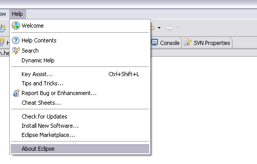
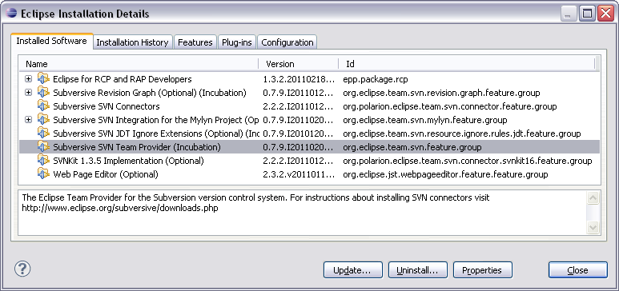

Subversive management instructions
After Subversive installation the user can manage it using plug-in management options. Subversive can be disabled, enabled, uninstalled or updated. To manage Subversive:
-
Start Eclipse and select menu item 'Help > Software Updates > Manage Configuration'

-
After selecting Subversive plug-ins in the tree view the list of available management options is shown on the right to provide a probability of choosing required option.
